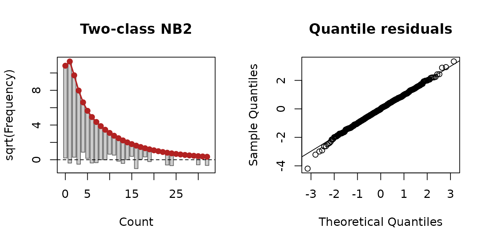
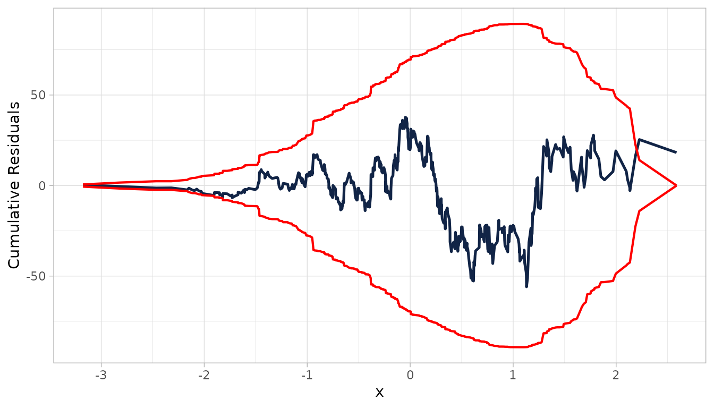

Latent-class and finite-mixture count regression
Source:vignettes/latent-class-regression.Rmd
latent-class-regression.RmdThis article fits count regressions in which the coefficients differ
between unobserved classes, and in which class membership can depend on
covariates. It covers the two equivalent interfaces, sharing parameters
between classes, choosing the number of classes, class probabilities,
predictions and marginal effects, mixtures of different families, panel
data with one class per panel, diagnostics and inference. Mixtures
without covariates are introduced in
vignette("finite-mixture-getting-started", package = "flexCountReg").
The model
For unit \(i\) with count predictors \(x_i\) and membership predictors \(z_i\),
\[ P(Y_i = y) = \sum_{k=1}^K \pi_k(z_i)\, f_k(y \mid x_i, \theta_k), \qquad \pi_k(z_i) = \exp(z_i^\top\gamma_k) \Big/ \sum_h \exp(z_i^\top\gamma_h), \quad \gamma_K = 0 . \]
Each class \(k\) has its own count
regression \(f_k\) (any family of
countreg()), and the class-membership probabilities follow
a multinomial logit with the last class as reference. Count predictors
and membership predictors play different roles: \(x\) changes the expected count
within a class, \(z\) changes
which class a unit is likely to belong to.
Simulated data with two pathways
To keep the two pathways distinguishable, the simulated count
predictor x only affects the class means and the binary
membership predictor z only affects class membership.
set.seed(101)
n <- 600
x <- rnorm(n)
z <- rbinom(n, 1, 0.5)
true_class <- ifelse(runif(n) < plogis(-0.8 + 1.6 * z), 1, 2)
mu <- ifelse(true_class == 1, exp(0.3 + 0.2 * x), exp(1.6 + 0.6 * x))
y <- rnbinom(n, size = 1 / 0.25, mu = mu)
d <- data.frame(y, x, z)Class 1 has low counts and a weak slope; class 2 has higher counts
and a steeper slope. Units with z = 1 are more likely to be
in class 1. Both classes are NB2 with dispersion \(\alpha = 0.25\), i.e. \(\ln\alpha = -1.39\).
Two interfaces, one model
countreg_lc() uses latent-class vocabulary
(classes, membership_formula);
countreg_mix() uses finite-mixture vocabulary
(components, mixing_formula). Both call the
same estimation engine:
lc <- countreg_lc(y ~ x, data = d, family = "NB2", classes = 2,
membership_formula = ~ z, n_starts = 4, seed = 1)
mx <- countreg_mix(y ~ x, data = d, family = "NB2", components = 2,
mixing_formula = ~ z, n_starts = 4, seed = 1)
c(latent_class = logLik(lc), mixture = logLik(mx))
#> latent_class mixture
#> -1328.679 -1328.679
all.equal(coef(lc), coef(mx))
#> [1] TRUE
class(lc)
#> [1] "countreg_lc" "countreg_mix" "flexCountReg"Coefficient names are the same in both
(Component<k>:...); only the printed labels differ
(“Class” or “Component”).
Sharing parameters between classes
By default every class has its own coefficients and dispersion. The
shared argument estimates a parameter once for all classes:
dis1 = TRUE shares the first distribution parameter (here
the NB2 \(\ln\alpha\)), and
mean names formula terms whose coefficients are common.
lc_sd <- countreg_lc(y ~ x, data = d, family = "NB2", classes = 2,
membership_formula = ~ z,
shared = list(dis1 = TRUE), n_starts = 4, seed = 1)
lc_sx <- countreg_lc(y ~ x, data = d, family = "NB2", classes = 2,
membership_formula = ~ z,
shared = list(dis1 = TRUE, mean = "x"),
n_starts = 4, seed = 1)
data.frame(model = c("class-specific dispersion", "shared dispersion",
"shared dispersion and slope"),
logLik = sapply(list(lc, lc_sd, lc_sx), logLik),
df = sapply(list(lc, lc_sd, lc_sx), function(m) length(coef(m))),
AIC = sapply(list(lc, lc_sd, lc_sx), AIC),
BIC = sapply(list(lc, lc_sd, lc_sx), BIC))
#> model logLik df AIC BIC
#> 1 class-specific dispersion -1328.679 8 2673.357 2708.533
#> 2 shared dispersion -1328.742 7 2671.484 2702.263
#> 3 shared dispersion and slope -1336.136 6 2684.273 2710.654Sharing the dispersion costs almost nothing in log-likelihood (the
data were generated with a common \(\alpha\)), while forcing a common slope is
clearly worse, as it should be. A shared factor is shared as a whole
term, never as individual dummy columns. Distribution parameters can be
shared only between classes of the same family, because the “same” label
in two families (e.g. ln(alpha) in NB1 and NB2) does not
have the same meaning.
Reading the summary
summary(lc_sd)
#> Call:
#> countreg_lc(formula = y ~ x, data = d, family = "NB2", classes = 2,
#> membership_formula = ~z, shared = list(dis1 = TRUE), n_starts = 4,
#> seed = 1)
#>
#> Latent-class count model with 2 classes
#> Class 1: NB2
#> Class 2: NB2
#> Mixing: multinomial logit on covariates (reference: Class 2)
#> Optimizer: BFGS + Newton-Raphson refinement | gradient close to zero (gradtol)
#>
#> Coefficients (standard errors: observed information (Hessian)):
#>
#> Class 1 (NB2):
#> Estimate Std. Error z value Pr(>|z|)
#> Component1:Mean:(Intercept) 0.2281 0.0998 2.29 0.022 *
#> Component1:Mean:x 0.2059 0.0864 2.38 0.017 *
#> ---
#> Signif. codes: 0 '***' 0.001 '**' 0.01 '*' 0.05 '.' 0.1 ' ' 1
#>
#> Class 2 (NB2):
#> Estimate Std. Error z value Pr(>|z|)
#> Component2:Mean:(Intercept) 1.5889 0.0691 23.0 <2e-16 ***
#> Component2:Mean:x 0.5840 0.0447 13.1 <2e-16 ***
#> ---
#> Signif. codes: 0 '***' 0.001 '**' 0.01 '*' 0.05 '.' 0.1 ' ' 1
#>
#> Shared parameters:
#> Estimate Std. Error z value Pr(>|z|)
#> Shared:ln(alpha) -1.599 0.273 -5.85 4.9e-09 ***
#> ---
#> Signif. codes: 0 '***' 0.001 '**' 0.01 '*' 0.05 '.' 0.1 ' ' 1
#>
#> Mixing (multinomial logit):
#> Estimate Std. Error z value Pr(>|z|)
#> Mixing:Component1:(Intercept) -0.851 0.294 -2.90 0.0037 **
#> Mixing:Component1:z 1.657 0.289 5.73 1e-08 ***
#> ---
#> Signif. codes: 0 '***' 0.001 '**' 0.01 '*' 0.05 '.' 0.1 ' ' 1
#>
#> Class sizes:
#> label family prior posterior effective_n modal_n mean_count
#> Class1 NB2 0.5018 0.5018 301.1 319 1.269
#> Class2 NB2 0.4982 0.4982 298.9 281 5.564
#> (prior: mean membership probability; posterior: mean posterior probability;
#> effective_n: sum of posterior probabilities; modal_n: units whose most
#> probable class it is; mean_count: average expected count)
#>
#> Log-likelihood: -1328.742 | AIC: 2671.484 | BIC: 2702.263 | ICL: 3155.722
#> N: 600
#> Entropy: 226.73 | relative entropy: 0.455
#> Starts: 4 | 4 reached the selected log-likelihood
#> Observed information: positive definite (condition number 127 ) | max |gradient|: 8.49e-09
#> No likelihood-ratio test of the number of classes is reported (non-standard distribution).The summary groups the coefficients by class, shared parameters and the membership model. Below it:
-
Class sizes.
prioris the average membership probability from the covariates;posteriorthe average posterior probability given the outcomes;effective_nthe sum of posterior probabilities;modal_nthe number of units whose most probable class it is;mean_countthe class’s average expected count. Classes are numbered bymean_count(a display convention: the numbering of same-family classes is arbitrary). - Entropy. How well the posterior probabilities separate the units. The relative entropy is 1 for a perfect classification and 0 when every unit has probabilities \(1/K\). Low entropy does not mean a bad model: the mixture can describe the counts well even when individual units cannot be classified.
-
Starts and observed information
(see
vignette("numerical-reliability", package = "flexCountReg")): how many starts reached the selected solution, whether the information matrix is positive definite, and the largest gradient component.
The estimates are close to the generating values (class 1: \(0.3, 0.2\); class 2: \(1.6, 0.6\); \(\ln\alpha = -1.39\); membership \(-0.8, 1.6\)), with sampling error. The
start table is in lc_sd$model$starts.
How many classes?
lc_1 <- countreg_lc(y ~ x, data = d, family = "NB2", classes = 1)
lc_3 <- countreg_lc(y ~ x, data = d, family = "NB2", classes = 3,
membership_formula = ~ z,
shared = list(dis1 = TRUE), n_starts = 4, seed = 1)
fits <- list(`K = 1` = lc_1, `K = 2` = lc_sd, `K = 3` = lc_3)
data.frame(K = 1:3,
logLik = sapply(fits, logLik),
df = sapply(fits, function(m) length(coef(m))),
AIC = sapply(fits, AIC), BIC = sapply(fits, BIC),
ICL = sapply(fits, function(m) m$model$ICL),
starts_reaching_best = sapply(fits, function(m)
sum(m$model$starts$reached_best)))
#> K logLik df AIC BIC ICL starts_reaching_best
#> K = 1 1 -1358.800 3 2723.600 2736.791 2736.791 1
#> K = 2 2 -1328.742 7 2671.484 2702.263 3155.722 4
#> K = 3 3 -1327.657 11 2677.315 2725.681 3549.552 3Here AIC and BIC both prefer two classes, the three-class fit improves the log-likelihood by about one unit for four more parameters, and ICL prefers one class. The disagreement is informative: the two generating classes overlap a lot (the relative entropy in the summary above is below 0.5), so the mixture describes the counts better than one NB2 regression, but individual units cannot be assigned to a class with confidence, and ICL penalizes exactly that. Some caveats apply to any such table:
- No likelihood-ratio test of \(K\)
against \(K + 1\) is reported, and
regCompTest()refuses mixture models: the chi-square reference distribution does not hold when a class can vanish or two classes merge. - ICL (\(\text{BIC} + 2 \times \text{entropy}\)) favors well-separated classes. It answers a classification question, not “which model predicts best”; with \(K = 1\) it equals BIC.
- Information criteria are comparable only on the same rows and
outcome. Held-out log scores (see
vignette("predictive-validation", package = "flexCountReg")) are the more direct check of predictive value. - Choosing \(K\) from the data and then reporting Wald intervals for the chosen model ignores the selection step.
Class probabilities: prior and posterior
class_probs() (or component_probs())
returns membership probabilities. The prior probabilities
depend only on z; the posterior probabilities also
use each unit’s own outcome.
prior <- class_probs(lc_sd, conditioning = "prior")
post <- class_probs(lc_sd, conditioning = "posterior")
colnames(prior) <- paste0("prior_", colnames(prior))
colnames(post) <- paste0("posterior_", colnames(post))
head(cbind(d[, c("y", "x", "z")], round(prior, 3), round(post, 3)))
#> y x z prior_Class1 prior_Class2 posterior_Class1 posterior_Class2
#> 1 5 -0.3260365 0 0.299 0.701 0.039 0.961
#> 2 4 0.5524619 1 0.691 0.309 0.499 0.501
#> 3 1 -0.6749438 0 0.299 0.701 0.474 0.526
#> 4 1 0.2143595 1 0.691 0.309 0.920 0.080
#> 5 2 0.3107692 0 0.299 0.701 0.491 0.509
#> 6 2 1.1739663 0 0.299 0.701 0.759 0.241
aggregate(cbind(prior_class1 = prior[, 1]) ~ z, data = d, FUN = mean)
#> z prior_class1
#> 1 0 0.2992070
#> 2 1 0.6913218
table(estimated = max.col(post), generating = true_class)
#> generating
#> estimated 1 2
#> 1 257 62
#> 2 45 236The cross-tabulation is possible only because the data were simulated. The modal (most probable) class is a descriptive, uncertain classification; it should not be treated as an observed variable in further analyses without accounting for that uncertainty.
Predictions
The expected count of the mixture is the probability-weighted average
of the class expected counts. predict() returns either:
nd <- data.frame(x = c(-1, 0, 1, 0), z = c(0, 0, 0, 1), y = NA)
cbind(nd[, c("x", "z")],
predict(lc_sd, newdata = nd, type = "component"),
prior_class1 = class_probs(lc_sd, newdata = nd)[, 1],
mixture = predict(lc_sd, newdata = nd, type = "response"))
#> x z Class1 Class2 prior_class1 mixture
#> 1 -1 0 1.022482 2.731452 0.2992070 2.220116
#> 2 0 0 1.256271 4.898229 0.2992070 3.808530
#> 3 1 0 1.543515 8.783843 0.2992070 6.617486
#> 4 0 1 1.256271 4.898229 0.6913218 2.380464The default conditioning = "prior" uses only covariates,
so these are predictions for new units; changing the outcome column of
newdata cannot change them.
conditioning = "posterior" gives the retrospective version,
conditioned on the outcomes of units whose counts are known, which is
not an out-of-sample prediction. There is no single linear predictor of
the mixture; type = "link" returns one per class.
Marginal effects: two pathways
A predictor can change the mixture mean through the class means and through the class probabilities:
\[ \partial m_i / \partial v = \sum_k \pi_{i,k} \, \partial m_{i,k} / \partial v + \sum_k m_{i,k} \, \partial \pi_{i,k} / \partial v . \]
margEffTable() differentiates the full prediction, so
both terms are included, and variables that enter only the membership
model (here z) are listed:
margEffTable(lc_sd)
#> Marginal Effects / Elasticities
#> Method: delta
#>
#> term variable_type effect_metric estimate std_error t_value p_value
#> x continuous Average marginal effect 1.784 0.186 9.591 0
#> z indicator Pseudo-elasticity (%) -36.340 4.698 -7.735 0
#> sig lower_ci upper_ci n_obs successful_bootstraps
#> *** 1.420 2.149 600 NA
#> *** -45.548 -27.132 600 NAThe effect of x works only through the class means; the
effect of z works only through membership (moving units
towards the low-count class lowers the expected count). Standard errors
use the delta method with the full covariance matrix of the fit;
bootstrap standard errors of marginal effects are not yet available for
mixtures. An overall effect is not the average of the
class-specific slopes.
Mixtures of different families
Classes need not share a family. Here a Poisson class and an NB2
class are estimated jointly; the names of the family vector
become class labels:
mf <- countreg_mix(y ~ x, data = d, family = c(low = "POISSON", high = "NB2"),
mixing_formula = ~ z, n_starts = 4, seed = 1)
coef(mf)
#> Component1:Mean:(Intercept) Component1:Mean:x
#> 0.1022334 0.1592997
#> Component2:Mean:(Intercept) Component2:Mean:x
#> 1.5432941 0.5800074
#> Component2:ln(alpha) Mixing:Component1:(Intercept)
#> -1.4576594 -1.0665341
#> Mixing:Component1:z
#> 1.6096611
mf$model$classes[, c("label", "family", "prior_share", "mean_count")]
#> label family prior_share mean_count
#> low low POISSON 0.4505758 1.112655
#> high high NB2 0.5494242 5.305852
c(AIC_mixed = AIC(mf), AIC_NB2_NB2 = AIC(lc_sd))
#> AIC_mixed AIC_NB2_NB2
#> 2672.140 2671.484Components of different families keep the order given in
family (they are not exchangeable). Only Poisson, NB1 and
NB2 are validated as mixture components; other families can be used,
with a message that such mixtures are experimental.
Panel data: one class per panel
With group_var, every row of a panel belongs to the same
unknown class, so the panel likelihood is a mixture of products, \(\sum_k \pi_k \prod_{t} f_k(y_{t})\), not a
product of mixtures. The panel is the independent unit (BIC uses the
number of panels), and membership variables must be constant within each
panel.
set.seed(202)
G <- 120; Tt <- 6
pd <- data.frame(id = rep(seq_len(G), each = Tt), t = rep(seq_len(Tt), G))
w_panel <- rbinom(G, 1, 0.5)
cls_panel <- ifelse(runif(G) < plogis(-0.5 + 1.5 * w_panel), 1, 2)
pd$w <- w_panel[pd$id]
pd$x <- rnorm(nrow(pd))
pd$y <- rpois(nrow(pd), exp(c(0, 1.2)[cls_panel[pd$id]] + 0.4 * pd$x))
pfit <- countreg_lc(y ~ x, data = pd, classes = 2, membership_formula = ~ w,
group_var = "id", shared = list(mean = "x"),
n_starts = 4, seed = 1)
coef(pfit)
#> Component1:Mean:(Intercept) Component2:Mean:(Intercept)
#> -0.07607009 1.20517587
#> Shared:Mean:x Mixing:Component1:(Intercept)
#> 0.44335992 -0.51983540
#> Mixing:Component1:w
#> 1.76699865
c(rows = nobs(pfit), panels = attr(logLik(pfit), "nobs"))
#> rows panels
#> 720 120New panels versus panels with a history
For a new panel, only the membership covariates are known, so predictions use the prior class probabilities. For a panel with earlier observations, the class probabilities can be updated once with the likelihood of that history, and then used to predict later rows. Here periods 1 to 4 are the history and periods 5 and 6 the target:
history <- subset(pd, t <= 4)
target <- subset(pd, t >= 5)
head(history[, c("id", "t", "w", "x", "y")], 4)
#> id t w x y
#> 1 1 1 0 0.2248802 4
#> 2 1 2 0 0.7585108 9
#> 3 1 3 0 -0.8405271 2
#> 4 1 4 0 -1.3290907 1
head(target[, c("id", "t", "w", "x", "y")], 4)
#> id t w x y
#> 5 1 5 0 -0.5502363 1
#> 6 1 6 0 0.8314930 4
#> 11 2 5 1 -1.2319494 0
#> 12 2 6 1 -0.5315831 1
pred_new <- predict(pfit, newdata = target) # prior
pred_hist <- predict(pfit, newdata = target, conditioning = "history",
history = history)
head(cbind(target[, c("id", "t", "y")], new_panel = pred_new,
with_history = pred_hist))
#> id t y new_panel with_history
#> 5 1 5 1 1.9105917 2.6148812
#> 6 1 6 4 3.5254792 4.8250545
#> 11 2 5 0 0.8483221 0.5367369
#> 12 2 6 1 1.1572187 0.7321770
#> 17 3 5 2 2.7476668 3.7438778
#> 18 3 6 3 2.2517470 3.0681543
c(MAE_new_panel = mean(abs(target$y - pred_new)),
MAE_with_history = mean(abs(target$y - pred_hist)))
#> MAE_new_panel MAE_with_history
#> 1.356235 1.084002Only the history outcomes are used. Changing the target outcomes does not change the history-conditioned predictions:
target_changed <- target
target_changed$y <- 999
all.equal(pred_hist,
predict(pfit, newdata = target_changed, conditioning = "history",
history = history))
#> [1] TRUEPanels without history rows use their prior probabilities. The model assumes rows are independent given the class; it does not let a panel change class over time.
Random parameters within classes
Classes describe discrete groups of units. Units can also differ
continuously within a class: the effect of x can vary from
panel to panel around its class mean. rpar_formula adds
random parameters within the classes (a latent-class random-parameters
model):
\[ L_g = \sum_k \pi_k \int \prod_t f_k(y_t \mid x_t, \beta_k + b)\, dF_k(b). \]
Each class’s coefficient of a random variable is the mean of its
random parameter, and each class has its own standard deviation
(SD:), unless shared = list(rpar = TRUE) gives
all classes the same one. Here the slope of x varies within
each class:
set.seed(31)
G <- 200; Tt <- 5
rd <- data.frame(id = rep(seq_len(G), each = Tt))
cls <- ifelse(runif(G) < 0.6, 1, 2)[rd$id]
rd$x <- rnorm(nrow(rd))
slope <- c(0.5, -0.3)[cls] + rnorm(G)[rd$id] * c(0.5, 0.3)[cls]
rd$y <- rpois(nrow(rd), exp(c(0.2, 1.5)[cls] + slope * rd$x))
lcrp <- countreg_lc(y ~ x, data = rd, classes = 2, group_var = "id",
rpar_formula = ~ x, rpar_draws = 80, n_starts = 3,
seed = 1)
lcfix <- countreg_lc(y ~ x, data = rd, classes = 2, group_var = "id",
n_starts = 3, seed = 1)
round(coef(lcrp), 3)
#> Component1:Mean:(Intercept) Component1:Mean:x
#> 0.176 0.499
#> Component1:SD:x Component2:Mean:(Intercept)
#> 0.491 1.509
#> Component2:Mean:x Component2:SD:x
#> -0.310 0.251
#> Mixing:Component1:(Intercept)
#> 0.446
AIC(lcfix, lcrp)
#> df AIC
#> lcfix 5 4051.569
#> lcrp 7 3854.371The classes are found (true intercepts 0.2 and 1.5, mean slopes 0.5 and -0.3), and so are the standard deviations of the slope within them (0.5 and 0.3). Without random parameters, the variation of the slopes within each class is left in the counts, and the fit is much worse.
The likelihood is simulated with rpar_draws draws per
panel (the same draws for every class), with analytic gradients.
Predictions, probabilities, class probabilities and residuals integrate
over the random parameters, and simulate() draws new
coefficients for every panel. The class expected counts are exact (from
the moment generating functions of the random parameters, as
method = "Exact" in countreg_rp()), and
Inf with a warning where they do not exist (a lognormal
random parameter of a positive variable, for example). Conditioning on a
panel’s outcomes (conditioning = "posterior" or
"history") updates its class probabilities, not its random
parameters within the class. rpardists and
correlated work as in countreg_rp().
Classes and random parameters can stand in for each other: a class can take the place of a tail of a random parameter, and a large standard deviation the place of a missing class. Shared standard deviations are the more stable choice, and the start table shows whether several starts reach the same solution.
Diagnostics
Diagnostics use the prior mixture (covariates only), so they do not use each unit’s outcome to classify it before checking it.
oldpar <- par(mfrow = c(1, 2))
rootogram(lc_sd, main = "Two-class NB2")
qr <- residuals(lc_sd, type = "quantile")
qqnorm(qr, main = "Quantile residuals"); qqline(qr)
par(oldpar)Randomized quantile residuals use the mixture’s own distribution function; they are approximately standard normal when the model is correct. A CURE plot shows cumulative residuals along a covariate:
cureplot(lc_sd, indvar = "x")
The reference limits drawn by cureplot() are those of
the cureplots package, computed from the residuals; treat them as a
descriptive guide, not as a validated band for mixture models. For
distribution-only mixtures (y ~ 1) every fitted value is
the same, so a CURE plot against the fitted values carries no
information; use rootograms there.
A real-data example
The bundled abalone_rings data hold shell-ring counts of
4,177 abalone (see ?abalone_rings). To keep this article
fast, we use a random subset of 1,000 animals and a Poisson regression
of the rings on the logarithm of the shell weight.
data("abalone_rings")
set.seed(3)
ab <- abalone_rings[sample(nrow(abalone_rings), 1000), ]
ab$log_shell <- log(ab$shell_weight)
ab_1 <- countreg(rings ~ log_shell, data = ab, family = "POISSON",
method = "BFGS")
ab_2 <- countreg_lc(rings ~ log_shell, data = ab, family = "POISSON",
classes = 2, n_starts = 4, seed = 1)
#> Warning: The Hessian is not negative definite at the estimates, so the standard
#> errors of Mixing:Component1:(Intercept) are NA. The estimate may be on the
#> boundary of the parameter space or not at a maximum.
#> Warning: Components 1-2 are nearly identical (same family and almost the same
#> parameters): the fit is effectively one component fewer, and their shares and
#> means are arbitrary. Use fewer components.
coef(ab_2)
#> Component1:Mean:(Intercept) Component1:Mean:log_shell
#> 2.7337711 0.2773758
#> Component2:Mean:(Intercept) Component2:Mean:log_shell
#> 2.7339358 0.2774573
#> Mixing:Component1:(Intercept)
#> 0.5789948
ab_2$model$classes[, c("label", "prior_share", "mean_count")]
#> label prior_share mean_count
#> Class1 Class1 0.6408361 9.942788
#> Class2 Class2 0.3591639 9.943208
ab_2$model$numerical$information
#> [1] "singular"
data.frame(model = c("Poisson", "2-class Poisson"),
logLik = c(logLik(ab_1), logLik(ab_2)),
AIC = c(AIC(ab_1), AIC(ab_2)), BIC = c(BIC(ab_1), BIC(ab_2)))
#> model logLik AIC BIC
#> 1 Poisson -2309.09 4622.18 4631.996
#> 2 2-class Poisson -2309.09 4628.18 4652.719Every start reached the same solution, and it is degenerate: the two
classes have practically the same coefficients, the log-likelihood
equals that of the one-class Poisson regression, and the observed
information is singular because the mixing proportion has no effect on
the likelihood when the classes coincide (hence the warning about its
standard error). This is the expected outcome here. A mixture of Poisson
distributions is always at least as dispersed as a Poisson distribution,
while ring counts are underdispersed given shell size (see
?abalone_rings), so adding Poisson classes cannot help. The
right reading is “no evidence of classes in this model”, not “two groups
with about 65% and 35% of the animals”: the reported shares are
arbitrary when the classes coincide. For underdispersed counts, use
single-component families that allow it
(vignette("choosing-a-count-distribution", package = "flexCountReg")).
When a mixture does improve the fit of real data, interpret its classes
just as cautiously: before reading them as biological groups (for
example infants versus adults), compare them with models that use the
observed sex directly.
Inference
Standard errors come by default from the observed information of the full parameter vector (all classes, shared parameters and the membership model jointly), not from the separate EM steps. Alternatives:
# Sandwich standard errors from unit-level (row or panel) scores
fit_rob <- update(lc_sd, stderr = "robust")
# Nonparametric bootstrap of units: each replicate refits the whole mixture
# from the original estimates plus `boot_starts` new starts, and its classes
# are aligned with the original ones before computing the covariance
fit_boot <- update(lc_sd, stderr = "boot", bootstraps = 200,
control = lc_control(boot_starts = 3))
fit_boot$model$n_boot_ok # replicates used
fit_boot$model$n_boot_ambiguous # replicates with ambiguous class matchingNear a boundary (a nearly empty class, two nearly identical classes,
or membership coefficients diverging because a covariate separates the
classes) the information matrix is singular or ill-conditioned and Wald
intervals are unreliable; summary() reports this under
“Observed information”. Overall predictions do not depend on class
labels and are often well determined even when class-specific
coefficients are not.
Not yet available
- Zero-inflated, hurdle and underreporting components within mixtures.
- Different formulas for different components (all components share the mean and distribution-parameter formulas, with component-specific coefficients unless shared).
- Tolerance intervals for mixture predictions
(
tolerance_interval()refuses mixtures).predict(interval = ...)gives confidence and prediction intervals from the asymptotic normal distribution of the estimates, which is poor for weakly separated classes. - Bootstrap standard errors of marginal effects
(
se = "delta"works). - A calibrated test of the number of classes.
- Classes that change over time within a panel (hidden Markov models).
- Smooth terms together with random parameters, and heterogeneity in
the means or variances of the random parameters
(
het_mean_formula,het_var_formulaofcountreg_rp()).
Reproducibility
All starts are generated from seed and recorded in
fit$model$starts; the caller’s random-number stream is not
changed. The settings, the control object and the trained model
blueprint are stored in the fitted object
(fit$model$settings, fit$model$control,
fit$model$blueprint).
Related articles:
vignette("finite-mixture-getting-started", package = "flexCountReg")-
vignette("random-parameters-and-panels", package = "flexCountReg")for continuous heterogeneity vignette("prediction-for-panel-data", package = "flexCountReg")vignette("diagnosing-count-models", package = "flexCountReg")vignette("predictions-and-effects", package = "flexCountReg")
References
Grün, B., & Leisch, F. (2008). FlexMix version 2: Finite mixtures with concomitant variables and varying and constant parameters. Journal of Statistical Software, 28(4), 1-35.
McLachlan, G. J., & Peel, D. (2000). Finite Mixture Models. Wiley.
Wedel, M., DeSarbo, W. S., Bult, J. R., & Ramaswamy, V. (1993). A latent class Poisson regression model for heterogeneous count data. Journal of Applied Econometrics, 8(4), 397-411.